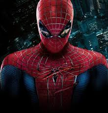
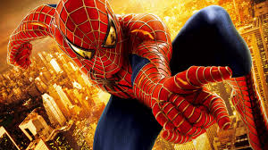
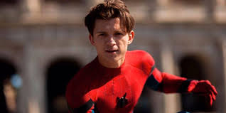
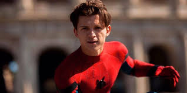
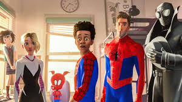
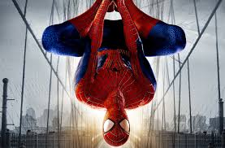
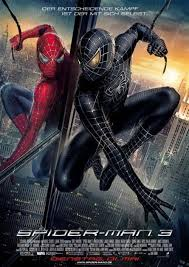
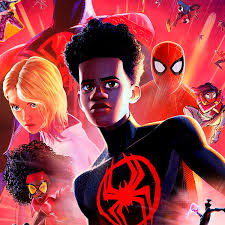
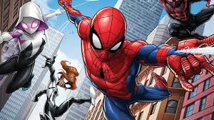

Sobre a franquia
O Homem-Aranha é um super-herói criado em 1962 por Stan Lee e Steve Ditko. Sua identidade é Peter Parker, um jovem que ganha poderes após ser picado por uma aranha radioativa. Ele possui força e agilidade sobre-humanas, consegue escalar paredes e tem o “Sentido Aranha”. Depois da morte do tio Ben, adota o lema: **"Com grandes poderes, vêm grandes responsabilidades"** e passa a combater o crime em Nova York enfrentando vilões como Duende Verde e Venom.
 Poderes
- Força sobre-humana – consegue levantar e segurar objetos muito pesados.
- Agilidade e reflexos incríveis – movimentos muito mais rápidos que os de uma pessoa comum.
- Escalar paredes – adere a superfícies como uma aranha.
- Sentido Aranha – um “alarme” instintivo que avisa sobre perigos próximos.
- Resistência física – suporta impactos e quedas que machucariam uma pessoa normal.
- Inteligência e criatividade – especialmente para criar gadgets, como os lançadores de teia.
- Uso das teias artificiais – para balançar entre prédios, prender inimigos e criar armadilhas.
Sobre o ator
O Tom Holland é o ator britânico que interpreta o Homem-Aranha no Universo Cinematográfico da Marvel (MCU). Ele nasceu em 1º de junho de 1996, em Londres, e começou a carreira no teatro, no musical Billy Elliot. No cinema, ele estreou como Peter Parker em "Capitão América: Guerra Civil" (2016) e, desde então, participou de vários filmes da Marvel, trazendo uma versão mais jovem e divertida do herói.
 

Todos os filmes
- Homem-Aranha (2002)
- Homem-Aranha 2 (2004)
- Homem-Aranha 3 (2007)
- O Espetacular Homem-Aranha (2012)
- O Espetacular Homem-Aranha 2: A Ameaça de Electro (2014)
- Capitão América: Guerra Civil (2016)
- Homem-Aranha: De Volta ao Lar (2017)
- Vingadores: Guerra Infinita (2018)
- Vingadores: Ultimato (2019)
- Homem-Aranha: Longe de Casa (2019)
- Homem-Aranha: Sem Volta para Casa (2021)
Animações
- Homem-Aranha (1967–1970)
- Homem-Aranha e seus Amigos Incríveis (1981–1983)
- Homem-Aranha: A Série Animada (1994–1998)
- O Espetacular Homem-Aranha (2008–2009)
- Ultimate Spider-Man (2012–2017)
- Homem-Aranha no Aranhaverso (2018)
- Homem-Aranha: Através do Aranhaverso (2023)
Galeria
  

